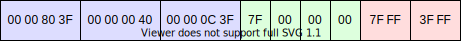

The
WebGLRenderingContext.vertexAttribPointer() method of the
WebGL API binds the buffer currently bound
to gl.ARRAY_BUFFER to a generic vertex attribute of the current vertex
buffer object and specifies its layout.
void gl.vertexAttribPointer(index, size, type, normalized, stride, offset);
indexsizetypegl.BYTE: signed 8-bit integer, with values in [-128, 127]gl.SHORT: signed 16-bit integer, with values in [-32768, 32767]
gl.UNSIGNED_BYTE: unsigned 8-bit integer, with values in [0, 255]
gl.UNSIGNED_SHORT: unsigned 16-bit integer, with values in [0,
65535]gl.FLOAT: 32-bit IEEE floating point numbergl.HALF_FLOAT: 16-bit IEEE floating point numbernormalizedgl.BYTE and gl.SHORT, normalizes the values
to [-1, 1] if true.gl.UNSIGNED_BYTE and gl.UNSIGNED_SHORT,
normalizes the values to [0, 1] if true.gl.FLOAT and gl.HALF_FLOAT, this parameter
has no effect.strideoffsettype.None.
gl.INVALID_VALUE error is thrown if offset is negative.
gl.INVALID_OPERATION error is thrown if stride and
offset are not multiples of the size of the data type.gl.INVALID_OPERATION error is thrown if no WebGLBuffer is bound to
the ARRAY_BUFFER target.gl.INVALID_OPERATION error is thrown if this vertex attribute is defined
as a integer in the vertex shader (e.g. uvec4 or ivec4,
instead of vec4).Let's assume we want to render some 3D geometry, and for that we will need to supply
our vertices to the Vertex Shader. Each vertex has a few attributes, like position,
normal vector, or texture coordinate, that are defined in an {{jsxref("ArrayBuffer")}}
and will be supplied to the Vertex Buffer Object (VBO). First, we need to bind the
{{domxref("WebGLBuffer")}} we want to use to gl.ARRAY_BUFFER, then, with
this method, gl.vertexAttribPointer(), we specify in what order the
attributes are stored, and what data type they are in. In addition, we need to include
the stride, which is the total byte length of all attributes for one vertex. Also, we
have to call {{domxref("WebGLRenderingContext/enableVertexAttribArray",
"gl.enableVertexAttribArray()")}} to tell WebGL that this attribute should be filled
with data from our array buffer.
Usually, your 3D geometry is already in a certain binary format, so you need to read
the specification of that specific format to figure out the memory layout. However, if
you are designing the format yourself, or your geometry is in text files (like Wavefront .obj files) and
must be converted into an ArrayBuffer at runtime, you have free choice on
how to structure the memory. For highest performance, interleave the attributes
and use the smallest data type that still accurately represents your geometry.
The maximum number of vertex attributes depends on the graphics card, and you can call
gl.getParameter(gl.MAX_VERTEX_ATTRIBS) to get this value. On high-end
graphics cards, the maximum is 16, on lower-end graphics cards, the value will be lower.
For each attribute, you must specify its index. This is independent from the location inside the array buffer, so your attributes can be sent in a different order than how they are stored in the array buffer. You have two options:
gl.vertexAttribPointer().gl.vertexAttribPointer().layout(location = 3) in vec4 position; would set the
"position" attribute to index 3.While the ArrayBuffer can be filled with both integers and floats, the
attributes will always be converted to a float when they are sent to the vertex shader.
If you need to use integers in your vertex shader code, you can either cast the float
back to an integer in the vertex shader (e.g. (int) floatNumber), or use
{{domxref("WebGL2RenderingContext.vertexAttribIPointer()",
"gl.vertexAttribIPointer()")}} from WebGL2.
The vertex shader code may include a number of attributes, but we don't need to specify
the values for each attribute. Instead, we can supply a default value that will be
identical for all vertices. We can call
{{domxref("WebGLRenderingContext.disableVertexAttribArray()", "gl.disableVertexAttribArray()")}}
to tell WebGL to use the default value, while calling
{{domxref("WebGLRenderingContext.enableVertexAttribArray()",
"gl.enableVertexAttribArray()")}} will read the values from the array buffer as
specified with gl.vertexAttribPointer().
Similarily, if our vertex shader expects e.g. a 4-component attribute with
vec4 but in our gl.vertexAttribPointer() call we set the
size to 2, then WebGL will set the first two components based
on the array buffer, while the third and fourth components are taken from the default
value.
The default value is vec4(0.0, 0.0, 0.0, 1.0) by default but we can
specify a different default value with
{{domxref("WebGLRenderingContext.vertexAttrib()", "gl.vertexAttrib[1234]f[v]()")}}.
For example, your vertex shader may be using a position and a color attribute. Most
meshes have the color specified at a per-vertex level, but some meshes are of a uniform
shade. For those meshes, it is not necessary to place the same color for each vertex
into the array buffer, so you use gl.vertexAttrib4fv() to set a constant
color.
You can call {{domxref("WebGLRenderingContext.getVertexAttrib()", "gl.getVertexAttrib()")}} and {{domxref("WebGLRenderingContext.getVertexAttribOffset()", "gl.getVertexAttribOffset()")}} to get the current parameters for an attribute, e.g. the data type or whether the attribute should be normalized. Keep in mind that these WebGL functions have a slow performance and it is better to store the state inside your JavaScript application. However, these functions are great for debugging a WebGL context without touching the application code.
This example shows how to send your vertex attributes to the shader program. We use an imaginary data structure where the attributes of each vertex are stored interleaved with a length of 20 bytes per vertex:
For example, the following vertex:
{
"position": [1.0, 2.0, 1.5],
"normal": [1.0, 0.0, 0.0],
"texCoord": [0.5, 0.25]
}
Will be stored in the array buffer as follows:

First, we dynamically create the array buffer from JSON data using a
{{domxref("DataView")}}. Note the use of true because WebGL expects our
data to be in little-endian.
//load geometry with fetch() and Response.json()
const response = await fetch('assets/geometry.json');
const vertices = await response.json();
//Create array buffer
const buffer = new ArrayBuffer(20 * vertices.length);
//Fill array buffer
const dv = new DataView(buffer);
for (let i = 0; i < vertices.length; i++) {
dv.setFloat32(20 * i, vertices[i].position[0], true);
dv.setFloat32(20 * i + 4, vertices[i].position[1], true);
dv.setFloat32(20 * i + 8, vertices[i].position[2], true);
dv.setInt8(20 * i + 12, vertices[i].normal[0] * 0x7F);
dv.setInt8(20 * i + 13, vertices[i].normal[1] * 0x7F);
dv.setInt8(20 * i + 14, vertices[i].normal[2] * 0x7F);
dv.setInt8(20 * i + 15, 0);
dv.setUint16(20 * i + 16, vertices[i].texCoord[0] * 0xFFFF, true);
dv.setUint16(20 * i + 18, vertices[i].texCoord[1] * 0xFFFF, true);
}
For higher performance, we could also do the previous JSON to ArrayBuffer conversion on the server-side, e.g. with Node.js. Then we could load the binary file and interpret it as an array buffer:
const response = await fetch('assets/geometry.bin');
const buffer = await response.arrayBuffer();
First, we create a new Vertex Buffer Object (VBO) and supply it with our array buffer:
//Bind array buffer to a Vertex Buffer Object const vbo = gl.createBuffer(); gl.bindBuffer(gl.ARRAY_BUFFER, vbo); gl.bufferData(gl.ARRAY_BUFFER, buffer, gl.STATIC_DRAW);
Then, we specify the memory layout of the array buffer, either by setting the index ourselves:
//Describe the layout of the buffer: //1. position, not normalized gl.vertexAttribPointer(0, 3, gl.FLOAT, false, 20, 0); gl.enableVertexAttribArray(0); //2. normal vector, normalized to [-1, 1] gl.vertexAttribPointer(1, 4, gl.BYTE, true, 20, 12); gl.enableVertexAttribArray(1); //3. texture coordinates, normalized to [0, 1] gl.vertexAttribPointer(2, 2, gl.UNSIGNED_SHORT, true, 20, 16); gl.enableVertexAttribArray(2); //Set the attributes in the vertex shader to the same indices gl.bindAttribLocation(shaderProgram, 0, 'position'); gl.bindAttribLocation(shaderProgram, 1, 'normal'); gl.bindAttribLocation(shaderProgram, 2, 'texUV'); //Since the attribute indices have changed, we must re-link the shader //Note that this will reset all uniforms that were previously set. gl.linkProgram(shaderProgram);
Or we can use the index provided by the graphics card instead of setting the index ourselves; this avoids the re-linking of the shader program.
const locPosition = gl.getAttribLocation(shaderProgram, 'position'); gl.vertexAttribPointer(locPosition, 3, gl.FLOAT, false, 20, 0); gl.enableVertexAttribArray(locPosition); const locNormal = gl.getAttribLocation(shaderProgram, 'normal'); gl.vertexAttribPointer(locNormal, 4, gl.BYTE, true, 20, 12); gl.enableVertexAttribArray(locNormal); const locTexUV = gl.getAttribLocation(shaderProgram, 'texUV'); gl.vertexAttribPointer(locTexUV, 2, gl.UNSIGNED_SHORT, true, 20, 16); gl.enableVertexAttribArray(locTexUV);
| Specification | Status | Comment |
|---|---|---|
| {{SpecName('WebGL', "#5.14.10", "vertexAttribPointer")}} | {{Spec2('WebGL')}} | Initial definition. |
| {{SpecName('OpenGL ES 2.0', "glVertexAttribPointer.xml", "glVertexAttribPointer")}} | {{Spec2('OpenGL ES 2.0')}} | Man page of the OpenGL API. |
{{Compat}}